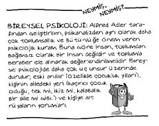

Alfred Adler (1870-1937)
Avusturyalı psikolog ve pedagog. Sokak çocukluğundan geldiği için insanları daha iyi tanıyabildiğini söylerdi. Geleceğin büyük psikoloğu olacak bu küçük çocuk, dört yaşına geldiğinde, büyüyünce doktor olacağını söylemeye başlamıştı. Çünkü raşitizm hastasıydı, sürekli hasta olan bir annesi vardı ve kardeşi yanındaki yatakta yatarken ölmüştü.
Lisede pek başarılı bir öğrenci değildi. Matematik öğretmeni ondan memnun olmadığını söyleyerek, ailesine, “Bir kunduracı yanına çırak olarak verin, bari ayakkabılarınız bedavaya gelir.” dediyse de civanmert baba bu öneriyi dinlemedi ve Adler’i daha fazla çalışmaya teşvik etti. Babasından gazı alan Adler kısa zamanda matematikte sınıfının en iyisi hâline geldi.
Viyana Üniversitesi Tıp okulunda doktorluk eğitimi alan Adler, 1902’de Freud ile tanıştı. Birlikte, Adler’in başkanlığında, Viyana Psikanaliz Topluluğu’nu kurdular. Bir süre sonra Freud ile fikir ayrılıkları ortaya çıktı. Adler’in Organların Yetersizliği Üzerine İnceleme kitabından sonra ilişkileri tamamen uzlaşılmaz bir hâle geldi ve 1911’de, Adler, izleyicileriyle beraber Freud’u açıkça eleştirerek “Aa yeter artık, hep senin gölgende mi kalacağım!” deyip “Bireysel Psikoloji”yi kurmuştur.
Adler’in “Üstünlük Arama” kuramına göre kişide var olan aşağılık duygusu davranışlara yön verir. Kişinin ruhsal yaşamı, çocukluğunda yaşadığı aşağılık (eksiklik) duygusundan yola çıkarak anlaşılabilir. Birinci Dünya Savaşı sonrası yazdığı bir yazıda insanların savaşa girmelerini bile yine bu aşağılık, acizlik, çaresizlik duygularına bağlamıştır. Adler’e göre, bu aşağılık duygusu kişilerde çok farklı bağımlılıklara (alkol, uyuşturucu madde, kumar vb), çeşitli nevrotik bozukluklara, cinsel davranım bozukluklarına ve suça eğilime neden olabilir.
Adler’e göre, bu gibi bozuklukları tedavi etmek için altta yatan aşağılık duygularını oluşturan olumsuz düşünceleri düzeltmek gerekir. Yetersiz organlar zamanla güçlenebilir, dâhice denilebilecek bir üstünlüğe kavuşabilir. Adler’in incelemesi Darwin’in “Büyük balık küçük balığı yutar. Yaşasın güçlüler, kahrolsun beceriksizler!” tarzındaki teorisini çürütüp 70’li yılların Türk filmlerine de bilimsel dayanak oluşturmuştur! Böylece fakir oğlan hep fakir kalmayacak, içindeki aşağılık duygusunu yenip zengin olabilecek ve “Hatırlar mısınız, bir zamanlar fakir ama gururlu bir genç vardı…” diyebilecektir.

1907’de yazdığı Organların Yetersizliği Üzerine İnceleme adlı kitabı bu kuramına temel oluşturur. Adler, kitabında kekeme Demosthenes’in büyük bir hatip, Schuman ve Beethoven gibi duyma sorunu olan kişilerin ünlü birer besteci olmasını ve benzer birçok misalleri kuramına örnek olarak göstermiştir.
Fikirlerini net ve anlaşılır şekilde ifade etmesi ile dikkatleri çeken Adler, altmış yedi yaşında iken Hollanda’da verdiği bir seminer sonrasında kalp krizinden ölmüştür.
Ne demiş Alfred Adler…
• Bireyler hangi soydan, cinsiyetten, sosyokültürel çevreden gelirlerse gelsinler öncelikle insandırlar. Her insan zekâsı, duyguları ve kültürü ile değerlidir.
• İyi ürün almak için, toprağa tohum atmak yetmez, ona iyi bakım vermek gerekir.
• Sadece başkalarında bulunan, sahip olamadığımız kaynakları övüp, sahip olduklarımızı görmezden gelmek de bir aşağılık duygusu ifadesidir.
• Siz ancak görevinizi tam olarak yaparsanız, yakınma hakkına sahip olabilirsiniz. Aksi halde yapılan yakınmalar kendi değersizlik hislerimizin ve aşağılık duygularımızın başkalarına yüklenmesi, yansıtılmasından başka bir şey değildir.
• Farklı cinslerden iki eşit insanın görevi olarak tanımladığımız aşk, iki bireyin bedensel ve düşünsel yönlerden birbirlerini çekmesini, başkalarını dışlamasını ve birbirlerine karşı mutlak bir teslimiyetle yaklaşmalarını gerektirir.
• Gizliden gizliye üstün olma isteği besleyen kızlar, genellikle güçsüz, sakat ya da kendi toplumsal konumlarının altındaki erkeklere yönelirler. Aynı şekilde, hemen el altındaki birinin veya bir akrabanın seçilmesi de, kendinden çok genç veya çok yaşlı bir erkeğin seçilmesi de güçsüzlük duygusunun belirtisidir.
• Kadınların erkeklerden daha az yetenekli olduğu savı bir masaldan, gerçekmiş izlenimi veren bir uydurmacadan başka nitelik taşımaz.
• Tırnak kemirme ve burun karıştırma gibi dikkat çeken kötü alışkanlıklara sahip insanlar, ilgili davranışlarıyla inatçı kimseler olduklarını ele verdiklerini bilmezler.
• Kendinizi ancak daha çok çalışarak, emek harcayıp ürün vererek ortaya koyabilirsiniz. Bu da ne yazık ki, yorulmadan olmaz. Ne kadar acılar yaşanmış olursa olsun, inatla “Ben hâlâ varım!” denmelidir. Kararmış gümüşler, göz alıcı parlaklıktaki gümüşlere dönüşebilir, yeter ki parlatmak için çabalayın.